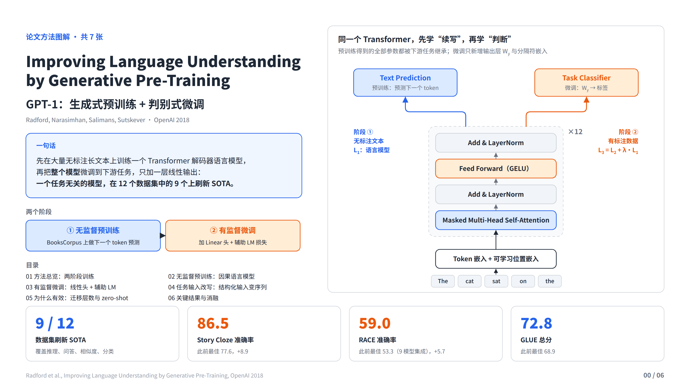
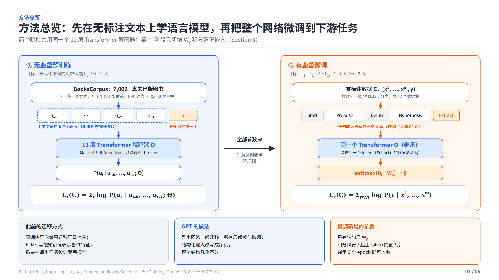
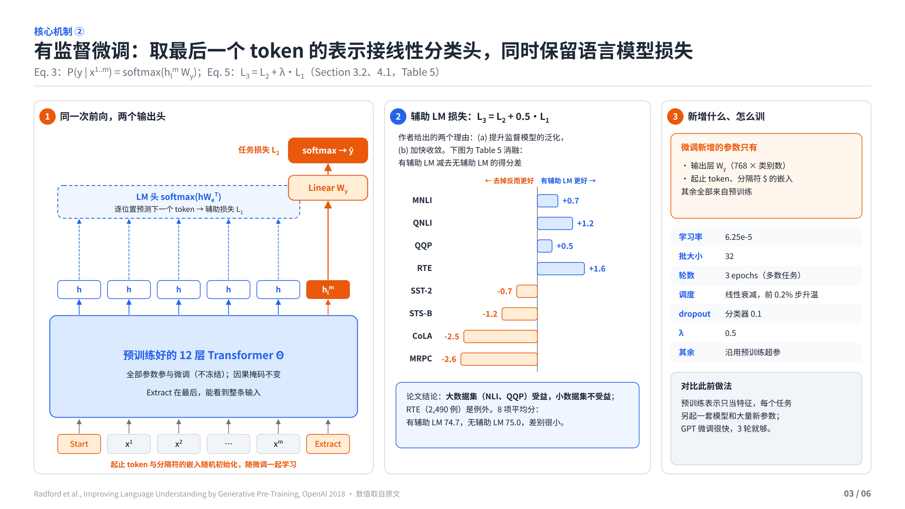
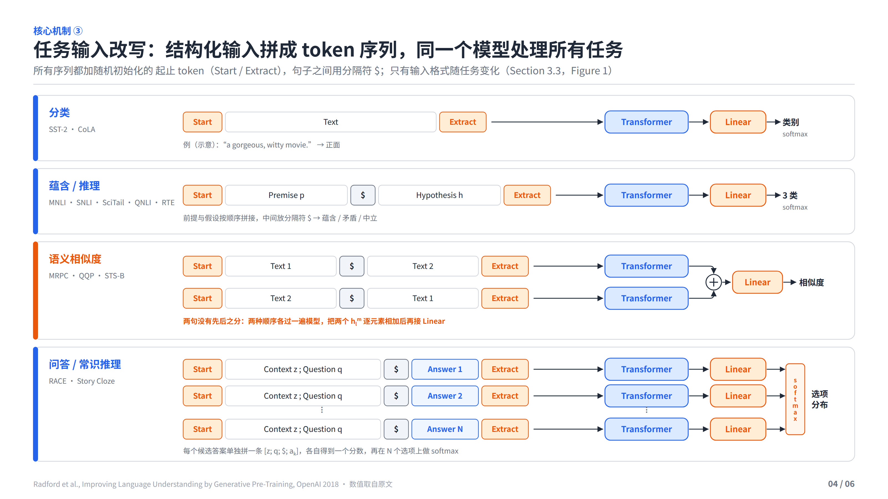
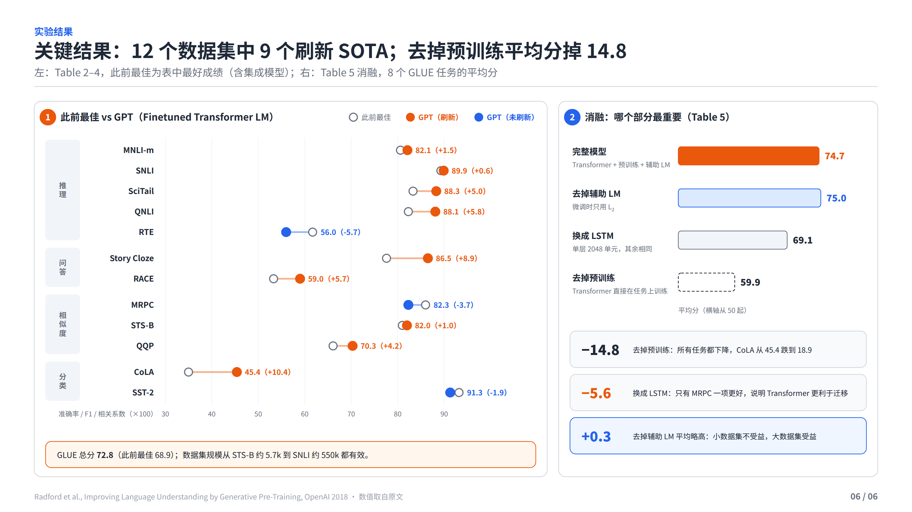
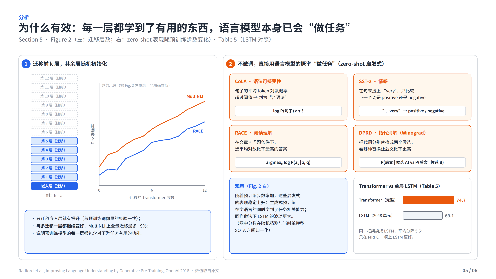

你可以做个小实验：把这篇 12 页的论文从头翻到尾，搜索 “GPT” 这三个字母。
一次都搜不到。
在论文所有的结果表里，这个模型只有一个朴素的名字：Finetuned Transformer LM，意思是“微调过的 Transformer 语言模型”。“GPT”这个叫法后来才流行起来，几个月后 BERT 论文做对比时，称它为 “OpenAI GPT”。
可就是这个连正式名字都没有的模型，用同一套参数，在 12 个语言理解数据集中的 9 个上刷新了最好成绩。它打败的对手里，有不少是专门为某个任务设计的模型，还有好几个是 5 个、9 个模型的集成。更重要的是，它确立的“先预训练、再微调”的做法，此后几年几乎成了 NLP 的标准流程。
这篇文章想讲清楚一件事：它到底做对了什么？
2018 年之前，做一个 NLP 任务的标准流程是这样的：先收集几千到几十万条人工标注数据，再为这个任务设计一个专用模型，然后从头训练。换一个任务，就把这三步重新走一遍。
问题出在第一步。标注很贵，而且很多领域根本没有足够的标注。论文开篇就点明了这个矛盾：
“Although large unlabeled text corpora are abundant, labeled data for learning these specific tasks is scarce.” 无标注的大规模文本到处都是，但针对具体任务的标注数据却很稀缺。（Abstract）
那就从无标注文本里学点东西吧。当时最成功的做法是预训练词向量（word2vec、GloVe）。但它只学到了“词”这一层：每个词对应一个固定向量，“苹果”在“吃苹果”和“苹果发布会”里是同一个向量，句子层面的东西一点没迁移过去。
再往前一步的是 ELMo 和 ULMFiT。ELMo 用双向 LSTM 语言模型产出“上下文相关”的词表示，但这些表示只是作为额外特征喂给下游模型，每个任务仍然要自己搭一套架构。ULMFiT 已经做到了“预训练语言模型再微调”，但它用的是 LSTM，论文认为这让它的“预测能力只能覆盖较短的距离”。
打个比方。预训练词向量像给新员工发一本词典；ELMo 像派一位懂行的顾问坐在新员工旁边，随时给建议，但干活的还是一个每次都要重新招的人。GPT 想做的是另一件事：先让一个人读完七千本书，再把这个人本身派去上岗。
论文还指出，想把句子层面的知识迁移过去，有两个悬而未决的问题：
“First, it is unclear what type of optimization objectives are most effective at learning text representations that are useful for transfer. Second, there is no consensus on the most effective way to transfer these learned representations to the target task.” 第一，不清楚用什么训练目标学出来的表示最适合迁移；第二，学到之后怎么迁移到目标任务上，也没有共识。（Section 1）
GPT 对这两个问题的回答都非常简单：目标就用语言模型；迁移就迁整个网络。
论文的核心判断，可以压缩成一句话：一个能把文章很好地续写下去的模型，必然已经理解了相当多的语言。
想象你在读一本侦探小说，读到“凶手就是——”时停下来。要猜对下一个词，你得记住几十页前的线索，理解人物关系，还得懂一点因果推理。语言模型的训练目标就是无数次这样的“猜下一个词”，而这个目标不需要任何人工标注：答案就是文本里的下一个词。
所以 GPT 的配方只有两步：先在大量无标注长文本上，用“预测下一个词”训练一个大的 Transformer；然后在每个下游任务上，用少量标注数据把整个模型微调一遍，只在最上面加一层线性输出。

预训练语料是 BooksCorpus：7,000 多本未出版的图书，冒险、奇幻、爱情都有。选它不是随便选的。论文特意对比了同样规模的 1B Word Benchmark：那个数据集按句子打乱过，长距离结构已被破坏；而书里有成段的连续文本，模型能学会利用几百个词之前的上下文。
训练目标就是标准的语言模型似然。给定语料 $\mathcal{U}=\{u_1,\dots,u_n\}$，最大化：
$$L_1(\mathcal{U})=\sum_i \log P(u_i \mid u_{i-k},\dots,u_{i-1};\Theta)$$人话：用前 $k$ 个词去猜第 $i$ 个词，把每一次猜对的对数概率加起来，越大越好。$\Theta$ 是网络的全部参数。
网络本身是一个 12 层的 Transformer 解码器（论文 Eq. 2）：
$$h_0 = UW_e + W_p,\qquad h_l=\texttt{transformer\_block}(h_{l-1}),\qquad P(u)=\mathrm{softmax}(h_nW_e^{\top})$$三行公式各管一件事：第一行把词变成向量，再加上可学习的位置向量（原版 Transformer 用的是正弦函数）；第二行过 12 层 Transformer；第三行用同一个词嵌入矩阵 $W_e$ 的转置把向量变回词表上的概率，输入和输出共享一套“词典”。
这里的关键是“解码器”三个字：每个位置只能看到它左边的词。这就像闭卷考试时，用一张纸把后面的答案盖住，你只能根据已经读过的内容往下猜。实现上，就是在注意力分数矩阵的右上三角填一个极大的负数，softmax 之后那些位置的权重就变成了 0。
def mask_attn_weights(w):
n = shape_list(w)[-1]
b = tf.matrix_band_part(tf.ones([n, n]), -1, 0) # 下三角全 1
b = tf.reshape(b, [1, 1, n, n])
w = w*b + -1e9*(1-b) # 未来位置 → -1e9
return w
def block(x, scope, train=False, scale=False):
with tf.variable_scope(scope):
nx = shape_list(x)[-1]
a = attn(x, 'attn', nx, n_head, train=train, scale=scale)
n = norm(x+a, 'ln_1') # 残差后再 LayerNorm（Post-LN）
m = mlp(n, 'mlp', nx*4, train=train) # FFN：768 → 3072 → 768
h = norm(n+m, 'ln_2')
return htrain.py:64-69、train.py:140-147（openai/finetune-transformer-lm）。matrix_band_part(…, -1, 0) 取下三角，正好是论文里的 masked self-attention；block 采用和原版 Transformer 一样的 Post-LN 结构，FFN 宽度是 4 倍隐藏维，对应论文的 3072。
这个掩码带来一个常被忽略的好处：一条 512 个 token 的序列，一次前向就能得到 512 个“猜下一个词”的训练信号，因为每一行都只依赖它左边的内容，彼此不会作弊。配置方面，模型有 12 层、768 维、12 个头，FFN 宽 3072，用 GELU 激活，BPE 词表做了 4 万次合并，每批 64 条 × 512 个连续 token，训练 100 个 epoch。按这个配置估算，参数量大约 1.17 亿（论文没有写出这个数）。
预训练完成后，拿到一个有标注的任务，比如判断两句话是否蕴含。每个样本是一串输入 token $x^1,\dots,x^m$ 加一个标签 $y$。GPT 的做法是：把整串输入送进预训练好的模型，取最后一个 token 在最顶层的激活 $h_l^m$，接一个新的线性层 $W_y$：
$$P(y\mid x^1,\dots,x^m)=\mathrm{softmax}(h_l^mW_y),\qquad L_2(\mathcal{C})=\sum_{(x,y)}\log P(y\mid x^1,\dots,x^m)$$为什么取最后一个？因为在因果掩码下，只有最后一个位置“看过”整串输入。它就像一份读完全文后写下的摘要。
此外，论文还发现微调时顺便继续做语言模型会有帮助，于是总目标变成：
$$L_3(\mathcal{C}) = L_2(\mathcal{C}) + \lambda \cdot L_1(\mathcal{C}),\qquad \lambda=0.5$$这就像上岗培训期间每天仍抽时间读书，免得一心扑在业务上，把读书积累的语感忘掉。论文给的理由是：它能“(a) 提升监督模型的泛化，(b) 加快收敛”。
代码把这几件事写得非常紧凑：词嵌入、特殊 token 和位置嵌入共用同一张表 we；语言模型头直接拿 we 的转置算 logits；分类头则找到 _classify_ 这个 token 的位置，把那一行取出来接线性层。
we = tf.get_variable("we", [n_vocab+n_special+n_ctx, n_embd], ...) # 词表 + 3 个特殊 token + 512 个位置
h = embed(X, we) # X[..., 0] 是 token id，X[..., 1] 是位置 id，两者查表后相加
for layer in range(n_layer):
h = block(h, 'h%d'%layer, train=train, scale=True)
lm_h = tf.reshape(h[:, :-1], [-1, n_embd])
lm_logits = tf.matmul(lm_h, we, transpose_b=True) # 输出层复用 we：权重共享
lm_losses = tf.nn.sparse_softmax_cross_entropy_with_logits(
logits=lm_logits, labels=tf.reshape(X[:, 1:, 0], [-1])) # 目标是右移一位的 token
clf_h = tf.reshape(h, [-1, n_embd])
pool_idx = tf.cast(tf.argmax(tf.cast(tf.equal(X[:, :, 0], clf_token), tf.float32), 1), tf.int32)
clf_h = tf.gather(clf_h, tf.range(shape_list(X)[0], dtype=tf.int32)*n_ctx+pool_idx) # 取 Extract 位置
...
clf_logits = clf(clf_h, 1, train=train) # 新增的线性层 W_y
# mgpu_train 中：
train_loss = tf.reduce_mean(clf_losses) + lm_coef*tf.reduce_mean(lm_losses) # lm_coef 默认 0.5节选自 train.py:164-190 与 train.py:205（--lm_coef 默认 0.5，见 train.py:353）。位置嵌入就是 we 的最后 n_ctx 行（预训练时为 512），所以论文里的 $W_e$ 和 $W_p$ 在代码里是同一个变量的两段。
微调新增的参数少得惊人：只有 $W_y$，以及起始、分隔、抽取这几个特殊 token 的嵌入。代码里，加载预训练权重时会随机初始化 3 行新嵌入，拼在词表和位置嵌入之间（train.py:410）。其余的全部来自预训练，而且全部参与更新。超参数也很省心：学习率 6.25e-5，batch 32，大多数任务训练 3 个 epoch 就够了。

还剩一个麻烦。语言模型只见过一整串连续文本，可很多任务的输入是有结构的：蕴含任务有前提和假设两句话，问答任务有文章、问题和好几个候选答案。
以前的做法是在预训练表示上面再搭一套任务专用的结构。GPT 不想这么做，因为每加一层定制结构，就多一份没有经过预训练的参数。它的办法很朴素：不改模型，改输入。论文的说法是：
“we use a traversal-style approach, where we convert structured inputs into an ordered sequence that our pre-trained model can process.” 我们把结构化输入转换成一条有序的序列，让预训练模型可以直接处理。（Section 3.3）
这就像考试统一用答题卡：不管是选择题、判断题还是连线题，都先誊写成同一种格式，阅卷机只需要会读这一种格式。
| 任务 | 输入怎么拼 | 输出怎么取 |
|---|---|---|
| 分类（SST-2、CoLA） | [Start] 文本 [Extract] | Extract 位置 → Linear |
| 蕴含（MNLI、SNLI 等） | [Start] 前提 $ 假设 [Extract] | Extract 位置 → Linear → 3 类 |
| 相似度（MRPC、QQP、STS-B） | 两种顺序各拼一条：A $ B 与 B $ A | 两条的 $h_l^m$ 逐元素相加 → Linear |
| 多选问答（RACE、Story Cloze） | 每个候选答案单独一条：[z; q; $; a_k] | 每条一个分数，N 个选项上做 softmax |
相似度那一行很有意思：两句话本来没有先后之分，但语言模型是从左往右读的，所以干脆两种顺序都读一遍，再把结果相加，抵消顺序带来的偏差。
def transform_roc(X1, X2, X3):
...
start = encoder['_start_']
delimiter = encoder['_delimiter_']
for i, (x1, x2, x3), in enumerate(zip(X1, X2, X3)):
x12 = [start]+x1[:max_len]+[delimiter]+x2[:max_len]+[clf_token] # 故事 + 结尾 1
x13 = [start]+x1[:max_len]+[delimiter]+x3[:max_len]+[clf_token] # 故事 + 结尾 2
...
xmb[:, :, :, 1] = np.arange(n_vocab+n_special, n_vocab+n_special+n_ctx) # 位置 id
return xmb, mmbtrain.py:229-245。Story Cloze 是“二选一”的多选题：同一个故事分别接两个候选结尾，拼成两条序列；model() 里 reshape(clf_logits, [-1, 2]) 再在两个选项上做 softmax。这正是表格最后一行的做法。

最后把新旧做法放在一起比一比：
| 预训练词向量 | ELMo（特征式） | GPT-1（微调式） | |
|---|---|---|---|
| 迁移了什么 | 每个词一个固定向量 | 上下文相关的词表示 | 整个网络 |
| 下游模型 | 每个任务重新设计 | 每个任务重新设计，表示当特征 | 同一个模型 + 一层 Linear |
| 预训练结构 | 浅层模型 | 双向 LSTM | 12 层 Transformer 解码器 |
| 结构化输入 | 靠任务模型处理 | 靠任务模型处理 | 改写成一条序列 |
论文在 4 类任务、12 个数据集上做了评测。下表挑出最有代表性的结果，“此前最佳”是论文表格里的最好成绩，其中不少是集成模型：
| 数据集 | 任务 | 此前最佳 | GPT-1 | 变化 |
|---|---|---|---|---|
| Story Cloze | 常识推理 | 77.6 | 86.5 | +8.9 |
| RACE | 阅读理解 | 53.3（9 模型集成） | 59.0 | +5.7 |
| QNLI | 问答式推理 | 82.3 | 88.1 | +5.8 |
| CoLA | 语法可接受性 | 35.0 | 45.4 | +10.4 |
| MNLI-m | 文本蕴含 | 80.6（3 模型集成） | 82.1 | +1.5 |
| GLUE 总分 | 综合 | 68.9 | 72.8 | +3.9 |
| RTE | 文本蕴含（小数据） | 61.7 | 56.0 | −5.7 |
先看 Story Cloze 和 RACE。这两个任务都要求读一段较长的上下文再做判断，GPT 在这里涨得最多，正好印证了“在长文本上预训练”的价值。CoLA 判断句子是否合语法，提升了 10 个点以上，说明语言模型在预训练中已经学到了语法知识。
再看输掉的项目。RTE 只有 2,490 个训练样本，GPT 不如一个多任务训练的 BiLSTM。作者也坦然承认这一点，并推测多任务训练可能会有帮助，只是还没有试。另外两项没有刷新的是 MRPC 和 SST-2。

不过，比这些分数更有说服力的是 Table 5 的消融实验。它回答了“到底是哪个部分在起作用”：
| 设置 | 8 项平均分 | 相对完整模型 |
|---|---|---|
| 完整模型（Transformer + 预训练 + 辅助 LM） | 74.7 | — |
| 去掉辅助 LM | 75.0 | +0.3 |
| 换成单层 LSTM（2048 单元） | 69.1 | −5.6 |
| 去掉预训练 | 59.9 | −14.8 |
这张表的意思很清楚：预训练是绝对主角，去掉它平均分掉 14.8，CoLA 更是从 45.4 跌到 18.9；把 Transformer 换成 LSTM 掉 5.6，说明架构也很关键；辅助 LM 损失的作用则因数据集而异：大数据集（MNLI、QNLI、QQP）受益，小数据集反而不受益，平均下来去掉它还略高一点。
论文还做了两个分析实验，我认为比主结果更耐人寻味。第一个是逐层迁移：只把预训练模型的前 k 层搬过去，其余层随机初始化。结果是每多搬一层，效果都更好，在 MultiNLI 上全量迁移最多带来 9% 的提升。也就是说，这 12 层里没有一层是白学的。
第二个是 zero-shot：完全不微调，直接用语言模型的概率去“做题”。比如情感分类，就在句子后面接上 “very”，看模型觉得下一个词更可能是 positive 还是 negative；阅读理解，就看在文章和问题之后，哪个答案的概率最高。随着预训练步数增加，这些“土办法”的表现稳定上升。论文据此推测：
“the underlying generative model learns to perform many of the tasks we evaluate on in order to improve its language modeling capability” 生成式模型为了把语言模型做得更好，顺带学会了执行我们评测的许多任务。（Section 5）

从技术上看，GPT-1 把“预训练 + 微调”做成了一个通用范式：一个任务无关的模型，只改输入格式、加一层线性头，就能在推理、问答、相似度、分类上同时拿到强结果。几个月后的 BERT 沿用了几乎相同的框架，只把单向语言模型换成双向的掩码语言模型，把 Start / Delim / Extract 换成了 [CLS] / [SEP]，下游任务同样是“整个模型微调 + 一层输出”。
从方法论上看，那个 zero-shot 小实验是一颗种子。它说明语言模型的概率本身就编码了任务能力，只要把任务“写成”一段让模型续写的文字。GPT-2 把这个想法推到台前，直接去掉微调做 zero-shot；GPT-3 再加上少样本示例，变成了今天大家熟悉的 prompt。回头看，从 2018 年到 2020 年，OpenAI 一直沿着同一条路走：同样的解码器架构，更大的模型，更多的数据，越来越少的任务定制。
从产业上看，它改变了 NLP 的成本结构。以前每个任务都要从零训练一个模型，而且要大量标注；之后，一家机构花大价钱预训练一次，所有人都可以拿来用少量标注微调，标注数据的门槛被大幅拉低。
论文自己承认的局限主要有两处。一是 RTE 这类小数据集上表现不佳，作者认为多任务训练可能有帮助，但没有探索。二是辅助 LM 损失并非总有收益，论文观察到它在小数据集上不起作用，却没有给出更细的解释。
我想再补充几点。第一，单向是它最大的结构性限制：在理解类任务里，一个词的含义往往同时取决于左右两侧，而 GPT 只能看左边。BERT 正是抓住了这一点，几个月后在 GLUE 的同一批任务上大幅超过了它。第二，评测只覆盖理解任务，几乎没有评估生成质量，而“生成”恰恰是这个模型后来最出名的能力。第三，可复现性有一定波动：官方仓库的 README 写明，用默认超参数跑 10 次，Story Cloze 准确率的中位数是 85.8%，略低于论文中单次运行报告的 86.5%。第四，仓库只公开了 Story Cloze 一个任务的微调代码，其余 11 个数据集的实验没有可直接复现的脚本。
opt.py:44-47 的解耦式权重衰减（Adam with weight decay fix）：只对矩阵参数（维度大于 1）施加 l2*p，偏置和 LayerNorm 的增益不衰减，正好对应论文“on all non bias or gain weights”。回到最开始的问题：一篇连 “GPT” 都没写的论文，为什么开启了 GPT 时代？
因为它的模型不重要，它的配方重要：先让模型在海量无标注文本上学会续写，再把整个模型拿去做具体的事。读书是通用的，上岗培训是轻量的，考题只需要改写成它熟悉的格式。后来的故事，只是把书换得更多、把人换得更大，最后连“上岗培训”这一步都省掉了。
1. 生成式预训练：只用“预测下一个词”这一个目标 $L_1$，在无标注长文本上训练 12 层 Transformer 解码器，消融显示它贡献了 14.8 分。
2. 迁移整个网络：微调时所有层都继承、都更新，只新增 $W_y$ 和几个特殊 token 的嵌入，总目标 $L_3=L_2+0.5\,L_1$。
3. 改输入，不改模型：结构化输入改写成带 Start、$、Extract 的序列，一个模型同时处理分类、蕴含、相似度和多选问答。